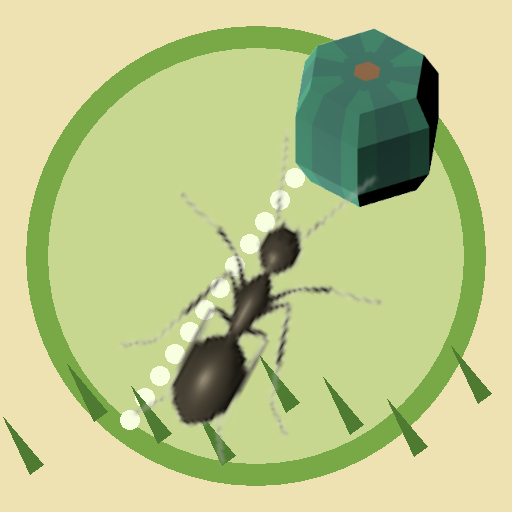

<- all projects

Ant Trail
PC
Volume
Live
Draw scent trails, guide swarms and grow a colony in this seasonal ant puzzle.
Tilly is the smallest scout in Hollow Oak, but her scent trails are the strongest. Draw a route from the nest to food and watch the colony march, giving puddles a wide berth, because ants drift, carriers lumber and a hungry spider is listening. Use Follow and Hurry trails and Avoid zones to guide workers, carriers, scouts and soldiers past red ants, rain, wind and a stomping shoe. 100 gardens across four seasons, plus two colony challenges, build a cutaway colony with a nursery, granary, barracks and fungus garden, in a gentle story about work, music and making room for a friend.